Refer to Figure E12.11 in the text book.
Write the expression of the current,  .
.
Here, are the reverse saturation currents.
Substitute 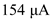 for  , 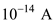 for , for , for , and for .
, 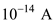 for , for , for , and for .
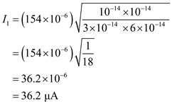
Thus, the bias current 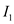 is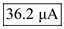.
Refer to Figure E12.11 in the text book.
Write the expression of the current, .
Here, are the reverse saturation currents.
Substitute 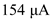 for , 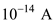 for , for , for , and for .
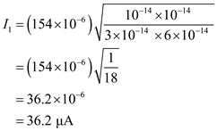
Thus, the bias current 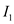 is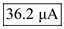.